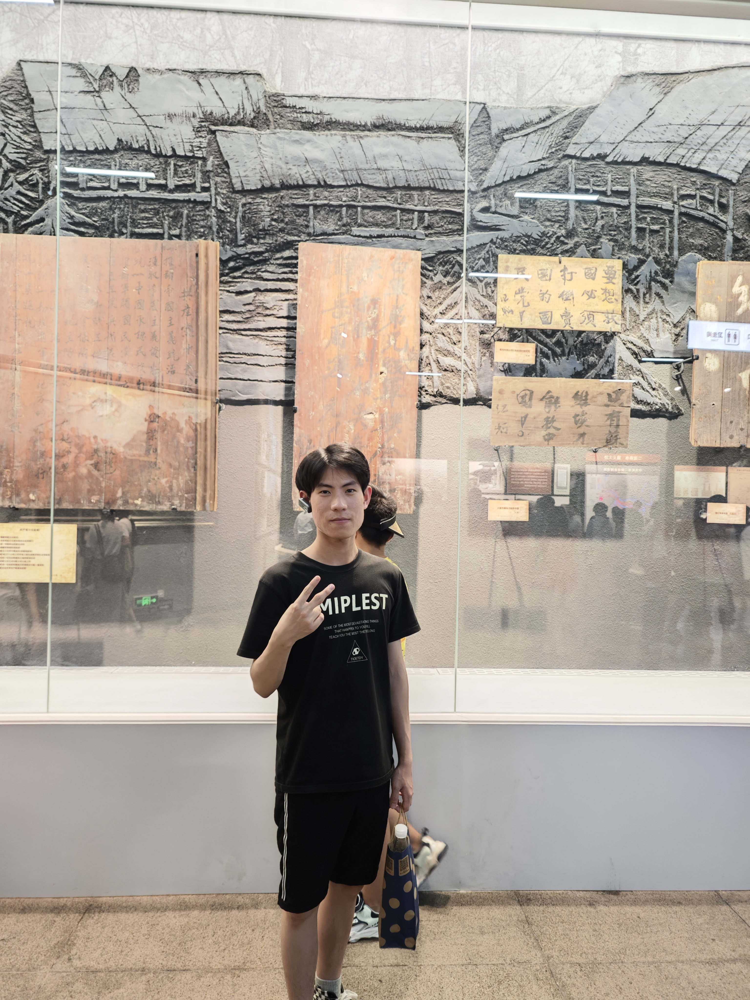

The Qi Lab
Lab Overview
The group will focus on cancer genomics, which will develope and integrate multi-omics, including bulk-seq and single-cell technology to decipher the impact of genomic mutations on diseases, especially tumor. We are also interested in the mechanisms of sex bias in cancer and autoimmunity diseases.
Our research interests include:
(1) The impact of loss of Y chromosome (LOY): understand the role of LOY in cancer, especially cancer metastasis; identify key factors of mosaic LOY in aging men.
(2) Sex bias in cancer incidence and outcome: identification of key mutations and pathways that can explain the mechanisms of sex bias in cancer.
(3) Development of novel cancer therapies and medicines.
(4) Tool development: develop tools for calling copy number variations in bulk-seq and single-cell data; identifying evolution events during tumor development.
Publications
Selected publications
-
Qi M, Dave PS, Francis N, DeFelice M, Pollock S, Corbitt H, Mitsiades IR, Wang G, Frere P, Fox A, Khitrov G, Petersen C, Larkin K, Hamilton S, Ellisen LW, Gulhan DC, Hidalgo‑Miranda A, Lennon N, Cibulskis C*, Rheinbay E*. Sensitive detection of somatic mutations in GC‑rich cancer gene promoters. NAR Cancer. 2026 May;8(2):zcag011.https://doi.org/10.1093/narcan/zcag011
-
Zhang S, Zhang Z, Wang L, Qi M*. Loss of chromosome Y in hematopoietic cells: mechanisms and implications for human disease. MedScience. 2026;20(3):397‑417.https://doi.org/10.1007/s11684‑026‑1246‑7
-
Qi M, Pang J, Mitsiades I, Lane AA, Rheinbay E*. Loss of chromosome Y in primary tumors. Cell. 2023 Jul;
186(14):3125-3136.e11.https://doi.org/10.1016/j.cell.2023.06.006 -
Rheinbay E, Qi M, Bouyssou JM, Oler AJ, Thumm L, Makiya M, et al. Genomics of PDGFR-rearranged hypereosinophilic syndrome. Blood Advances. 2023 Jun 13;7(11):2558-63.https://doi.org/10.1182/bloodadvances.2022009061
-
Qi M, Nayar U, Ludwig LS, Wagle N, Rheinbay E*. cDNA-detector: detection and removal of cDNA contamination in DNA sequencing libraries. BMC Bioinformatics. 2021 Dec;22(1):611.https://doi.org/10.1186/s12859-021-04529-2
-
Qi M#, Li Z#, Liu C, Hu W, Ye L, Xie Y, et al. CGT-seq: epigenome-guided de novo assembly of the core genome for divergent populations with large genome. Nucleic Acids Research. 2018;46(18):e107–e107.https://doi.org/10.1093/nar/gky522
-
Wang J#, Qi M#, Liu J#, Zhang Y*. CARMO: a comprehensive annotation platform for functional exploration of rice multi-omics data. The Plant Journal. 2015;83(2):359–74.https://doi.org/10.1111/tpj.12894
People

Meifang Qi
Professor, Principal Investigator
Email:mfqi@sinh.ac.cn

Shanshan Zhan
Laboratory Manager
sszhan@sinh.ac.cn
Wenxiao Zhang
Ph.D. Student
zhangwenxiao2023@sinh.ac.cn

Lin Jiao
M.Sc. Student(graduated)
jiaolin2023@sinh.ac.cn

Yidan Chen
M.Sc. Student(graduated)
chenyidan2023@sinh.ac.cn

Siyu Zhang
Ph.D. Student
zhangsiyu2023@sinh.ac.cn

Zhen Zhang
Ph.D. Student
zhangzhen2024@sinh.ac.cn
Zhuocheng Hu
Ph.D. Student
huzhuocheng2024@sinh.ac.cn

feng Zhang
M.Sc. Student
zhangfeng2025@sinh.ac.cn
Jichang He
M.Sc. Student
hejichang2025@sinh.ac.cn
Resources
cDNA-detector
cdna-detector is a Python tool for detecting and removing contaminating cDNA from vectors and other sources in DNA-Seq data (ATAC-Seq, ChIP-Seq, WES, etc). The tool analyzes BAM formatted alignment files (coordinate-sorted), detects candidate contaminant cDNAs and, if desired, removes suspected contaminant reads from BAM files.

Calling LOY: Sex chromosome extension for FACETS
This tool is designed to analyze copy number variation (CNV) of the sex chromosomes (especially the Y chromosome) from paired tumor/normal whole-genome (WGS) and whole-exome (WEX) sequencing. The tool uses the R package facets and the extension is described in detail in https://www.biorxiv.org/content/10.1101/2022.08.22.504831v1. The code also refers to scripts from this implementation of facets (https://github.com/vanallenlab/facets) for calling stable purity and ploidy.

Join Us
Graduate & Intern
Attention: "This recruitment program is currently not open to international (non Chinese, including overseas applicants) students and postdoctoral researchers.
If you are interested in research on cancer genomes and autoimmunity, and have a strong background in bioinformatics, programming, statistics, mathematics or related field, you are welcome to email Dr. Qi directly (mfqi@sinh.ac.cn) with your CV and transcripts of your major courses. A minimum commitment of 1 months is required. A stipend is available to cover living expenses.